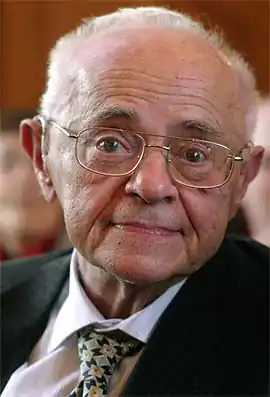
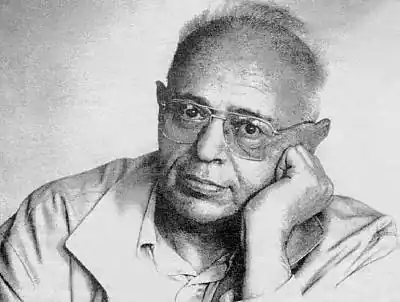
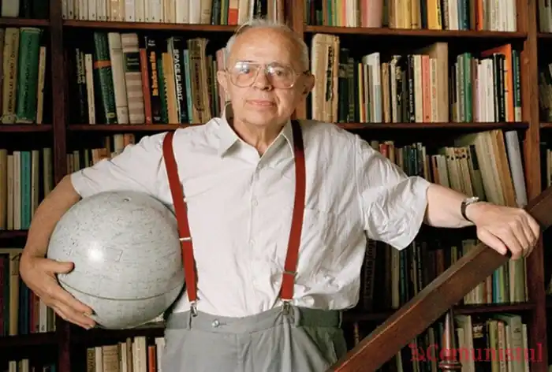

ЛЕМ, Станіслав (Lem, Stanistaw — нар. 12.09.1921, Львів) — польський письменник.Народився в сім'ї лікаря. Дитячі та юнацькі роки Лема згодом описав у автобіографічній повісті "Високий замок" ("Wysokizamek", 1966). Головне місце в повісті відведено зустрічам з великими ідеями в науці та культурі, що справили вплив на формування характеру письменника. Лем намагався показати, як із сором'язливої, допитливої, одержимої фантастичними задумами дитини виростає відомий письменник, хоча хлопчик і не мріяв про це. У книзі показано побут і звичаї довоєнної Польщі — держави з великою кількістю суперечливих соціальних проблем. Друга світова війна та гітлерівська окупація перервали навчання Лема, котрий за родинною традицією збирався стати лікарем. Лем став механіком, потрапивши в далеке та чуже для нього робітниче середовище, зблизився з учасниками руху Опору, боровся за звільнення та відродження Польщі. Події цього періоду згодом ляжуть в основу роману "Незагублений чac" ("Czas nieutracony", 1955).
Після війни Лем переїхав у Краків. Закінчивши медичний факультет, він став науковим співробітником, захопився історією та методологією науки, рецензував наукознавчі праці в журналі "Життя науки". Водночас виходять друком його перші оповідання та вірші, юнацька повість "Людина з Марса" (1946). Один за одним з'являються роман "Астронавти" ("Astronauci", 1951) про експедицію на Венеру, де земляни виявляють рештки колись високорозвиненої технічної цивілізації, що загинула від атомної війни; роман-утопія про комуністичне суспільство "Магелланова хмара" ("Oblok Magellana", 1955), збірка науково-фантастичних оповідань "Сезам" (1954), "Зоряні щоденники" ("Dziermiki gwiazdowe", 1957), "Вторгнення з Альдебарана" ("Inwazja z Aldebarana", 1959). Наукова фантастика Лема ґрунтується на широких наукових знаннях. Лем користується науковими ідеями як літературно-художнім засобом, щоб драматизувати ситуацію, в яку він ставить своїх героїв разом з читачем, щоб довести до абсурду деякі звичні уявлення буденної свідомості; вони відіграють важливу роль в його сатирі й пародії. Найкращою книгою автора, за його власним зізнанням, є роман "Соляріс" ("Solaris", 1961). "Мені б хотілося написати щось на зразок "Солярка", але такий успіх буває лише один раз", — зізнається Лем.
У романі сміливо та гостро порушуються серйозні філософські, моральні та соціальні проблеми, значення яких не просто є актуальним, але зростає з кожним днем в ході науково-технічної революції.Герой роману "Соляріс" Кріс Кельвін — вчений-біолог — прибуває на дослідницьку станцію віддаленої планети Соляріс, щоби підтвердити або спростувати необхідність наступних досліджень і пошуку контакту з єдиним "мешканцем" планети — величезною мислячою субстанцією — Океаном. Уже понад сотню років Океан задає землянам нові загадки. На жодну з них не дає відповіді нагромаджена впродовж років наукова література. На момент прибуття на планету Кельвіна Океан породжує новий феномен. Проникнувши в глибини підсвідомості мешканців станції — Сарторіуса, Снаута й Гібаряна, — він матеріалізує потаємні жахливі чи патологічно-привабливі образи, які людина намагається приховати як від суспільства, так і від самої себе. Ця доля не минає і щойноприбулого Кельвіна — наступного ж дня його відвідує покійна дружина Харрі, котра вчинила самогубство через духовну самотність близько десяти років тому. "Гості" землян обов'язково повинні бути поруч зі своїми "хазяями": величезна потворна негритянка стоїть біля трупа Гібаряна, котрий застрелився; якась істота в солом'яному капелюсі не дозволяє покинути кімнату Снаутові, Сарторіус ретельно приховує свого "гостя" від сторонніх очей. Спроби знищити спільні породження людської підсвідомості й активної волі Океану виявляються неможливими — вони знову відроджуються. Яку мету переслідує Океан, відтворюючи у реальному світі потаємні образи людського розуму? Що це — спроба краще зрозуміти прибульців, зіштовхнувши їх увіч зі світом їхнього власного "я" у його мінливій і непривабливій наготі? Чи ставитися до цього прояву слід лише як до факту діяльності чужої природи — безглуздої і неживої, визнати фактом, який потребує наукового осмислення, але не дозволити йому зачепити душу людини? В образах Сарторіуса і Кельвіна письменник втілив дві діаметрально протилежні позиції в сучасній науці — технократичну, яка вважає, що в процесі пізнання мета виправдовує будь-які засоби, аж до знищення самого об'єкта пізнання, і протилежну їй гуманістичну традицію, згідно з якою пізнання світу — це засіб досягнення шляхетних соціальних ідеалів людства. Соляристам, усупереч волі Кельвіна, вдається знищити гостей. Але духовно надломлений другою загибеллю Харрі Кельвін не залишає планету, вирішивши продовжувати дослідження загадкового і незбагненного життя Океану. Вважаючи за необхідне пояснити основну ідею свого роману, Лем писав у передмові до російського видання: "Гадаю, що дорога до зірок та їхніх мешканців буде не лише довгою та важкою, але й сповненою неймовірних явищ, які не мають жодних аналогій з нашою земною дійсністю. Це не означає — і вдумливий читач, звісно, зрозуміє, — ніби я впевнений, що нас повинні очікувати явища саме такі, які описані в романі "Соляріс". Я не претендую на роль пророка. Але я не писав теоретично-абстрактний трактат і тому повинен був розповісти цілком конкретну історію, щоби за її посередництвом висловити одну просту думку: "Поміж зірок нас чекає Невідоме". Роман Лема "Соляріс" був екранізований російським режисером А.Тарковським (1972); фільм був удостоєний великого призу на міжнародному фестивалі в Каннах.Книга Лема "Оповідання про пілота Піркса" (1968) присвячена життю простої, пересічної людини, котра потрапила у виняткові обставини. Він — космічний пілот і навігатор, для котрого метеоритні дощі, тривалі перельоти і зіткнення з таємницями космосу є буднями. Піркс — один із багатьох "трудівників космосу", котрі не усвідомлюють власного героїзму. Ледве чи не щомиті свого життя герой Л. мусить здійснювати активний вибір, від якого нерідко залежить життя і доля багатьох людей. Перипетії зоряних мандрів, трагедії, що відбуваються в нього на очах, не викликають у нього звички до вигляду страждань. Гнітюче враження як на героя, так і на читача справляють страждання людей, яким неможливо допомогти. Так, у новелі "Термінує" створюється фантастичний образ робота — машини для пломбування й усунення течі в реакторі, механізму, який у своїх рухах незбагненним чином зберіг пам'ять про останні слова загиблого екіпажу. Щоразу, коли робот виконує свою роботу, він неусвідомлено вистукує лопаточками рук, "морзянкою", передсмертні повідомлення пілотів, які гинули від нестачі кисню. Таким чином, щоразу, коли робот береться за роботу, з минулого знову з'являються загиблі космонавти, аби знову пережити останні жахливі миті. Усі пригоди пілота Піркса звичайні, вони є в житті будь-якого космічного пілота. Космонавти — це начебто інші люди. Пов'язавши якось життя з космосом, вони не можуть повернутися до існування в "нормальному", "земному" суспільстві. У новелі "Альбатрос "стосунки Піркса, що зав'язуються зі світською красунею, руйнує повідомлення про загибель космічного корабля "Альбатрос". Трагізм того, що трапилося, доходить лише до Піркса — люди, які його оточують — попутники в транспланетному перельоті — цікавляться лише тим, коли можна буде танцювати. Збірка фантастичних новел "Зоряні щоденники Ійона Тихого" (1957, додатк. вид. 1971) є спробою саркастичного осмислення світу. Вади, упередження чи просто смішні нісенітниці земної цивілізації поринають в ауру гротесково-фантастичного, набувають спотворених ззовні, але внутрішньо виправданих форм — нехай це буде безрадісне майбутнє планети Земля чи псевдоутопія сусідніх галактик. "Казки роботів" ("Bajki robotow", 1964) — збірка гумористичних новел, у яких почасти традиційні космічні сюжети переносяться у світ фантастики. Сповнені глибокого філософського змісту "Казки роботів" зрозумілі не лише дорослому, а й дитині: одна із чудових якостей Лема — вміння розповісти просто про складне. Окрім роману "Соляріс", крилатий вислів Лема "Поміж зірок нас чекає Невідоме" знайшов художнє втілення у значних романах письменника 60-х pp. — "Едем" ("Eden", 1958), "Повернення із зірок"("Powrot zgwizd", 1961), "Непереможний" ("Niezwyciezony", 1963). В "Едемі" письменник змалював жертв невдалої біологічної реконструкції. На планету Едем, як називають її жителі, прилітає дослідницька експедиція і намагається встановити контакт із жителями. Проте результати спостережень виявляються дивними: місцеві заводи переробляють власну продукцію; рови заповнені трупами; повсюди чудернацькі селища, схожі на концтабори, тощо. Жителі хочуть відгородитися від землян, намагаючись накрити їхній корабель непроникним куполом. І тільки наприкінці твору з'ясовується, що в самій основі едемського суспільства лежить брехня: у минулому влада спробувала перебудувати біологічну природу жителів планети, але експеримент не вдався. Утопічний світ далекого майбутнього постає перед астронавтом, котрий повернувся після тривалих мандрів у космосі на Землю, в романі "Повернення із зірок". Дивовижні міста, фантастичні винаходи та відкриття, з-поміж яких найзначніше — "бетризація" (профілактичне позбавлення центрів агресії у мозку людини), що уможливила звільнення світу від війн і злочинів; фантоманіка, що замінила собою мистецтво, спорт, дозвілля і значною мірою секс та еротику, — всі ці технологічні дива "дивного нового світу" приховують обов'язковий виворіт будь-якої утопії: плату за спокій і процвітання. Зі зникненням закладеної в генах агресивності суспільство неминуче втрачає й інші характерні риси людини: ризик, заповзятливість, здатність до самопожертви, науковий пошук, романтику невідкритого; духовно "ожиріле" людство приречене на деградацію. Один із варіантів невдалого контакту з іншою, абсолютно не схожою космічною цивілізацією Лем зумів наочно змалювати у романі "Непереможний" — про кіберцивілізацію електронних "мушок", що об'єднані у своєрідний колективний розум. З-поміж інших значних творів Лема слід виокремити роман-трактат "Голос Неба"("GIosPana", 1968), що характеризує новий етап у творчості письменника, коли над прозаїком починає домінувати есеїст-філософ.